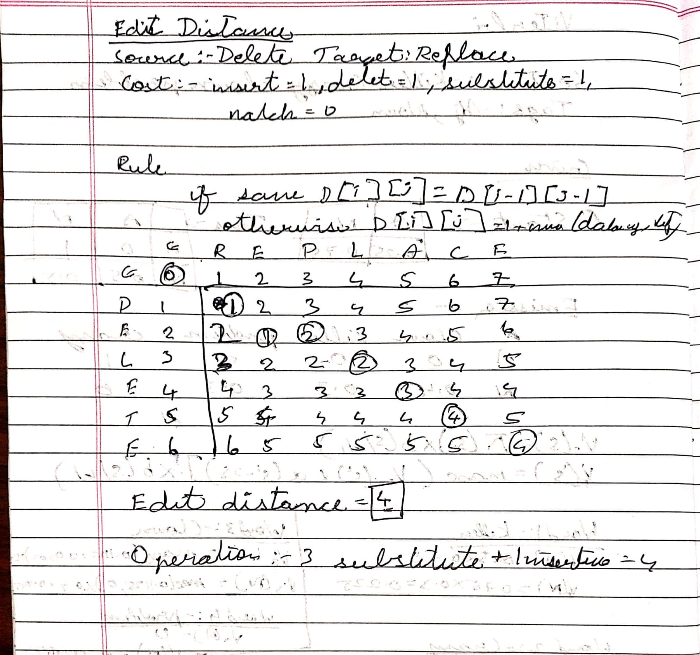
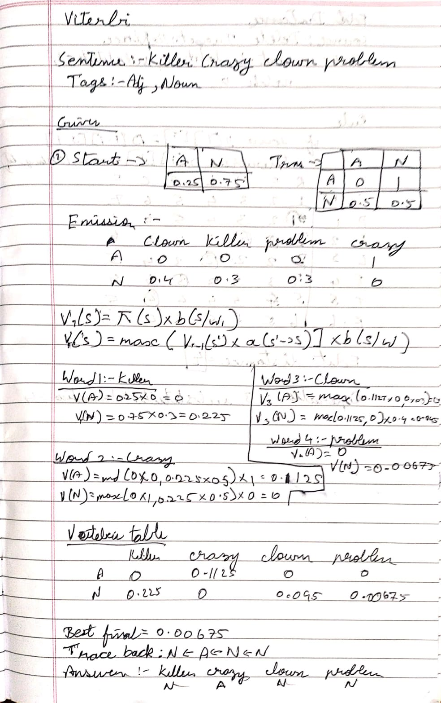
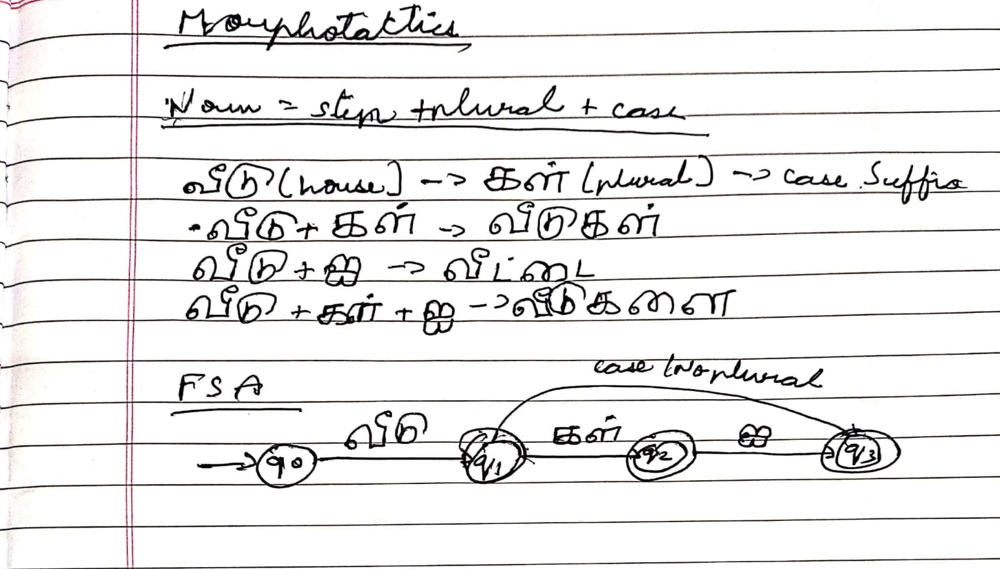

Introductory class
Which languages do I speak?
Asked in the first class whether I am multilingual, I named four languages.
- TAதமிழ்
- MLമലയാളം
- ENEnglish
- HIहिन्दी
Viterbi, edit distance, morphotactics and metaphor, worked through in Tamil, Malayalam, Hindi and English.
Seven entries: five class activities from CSI4001 and two notebooks from my GitHub. Where there is a working version, it is in the demos below.
Which languages I speak, answered in the first class.
The fewest insertions, deletions and substitutions that turn one string into another.
Finding the most likely tag sequence for killer, crazy, clown, problem.
The order in which morphemes may combine into a word, shown with Tamil.
Reading “His mind is a computer” as a metaphor, in four languages.
Word clouds, counts and a comparison of five presidents, with NLTK.
Naive Bayes on the last letter of a name, and cosine similarity between sentences.
Small, runnable versions of the ideas above. Change the inputs and watch the result update.
Asked in the first class whether I am multilingual, I named four languages.
Each cell holds the fewest edits between a prefix of the first word and a prefix of the second. Insert, delete and substitute each cost 1. The highlighted cells trace one cheapest route back from the bottom right.

The hidden states are the tags A (adjective) and N (noun); the words are what we see. Each column keeps, for each tag, the best score of any path that ends there.

A Tamil noun stem can take a plural suffix, then a case suffix, in that order only. Choose the pieces, then try swapping the order.

The same sentence in the four languages of this portfolio, and what the metaphor carries over.
Stop words and punctuation are removed first. In Obama’s 2009 address the most frequent word is “us” (23 times), then “nation” (12), “new” (11) and “america” (10).
Raw counts. The speeches differ in length, so read the bars as counts and not rates.
A long word has 10 or more letters. The share is out of all words left after removing stop words. Adams in 1825 is highest.
The full notebook, scroll through it below.
The vocabulary is learned from two sentences: “Tessaract is good optical character recognition engine” and “optical character recognition is significant”. Any new sentence becomes a row of 1s and 0s over that vocabulary, and cosine similarity compares two rows.
Words outside the vocabulary are ignored, and one-letter words are dropped, as in the notebook.
The only feature is the last letter of the name. The classifier learned from NLTK’s list of 7,944 male and female names, then labelled two new names.
The full notebook, scroll through it below.
Using previous and current messages to understand potentially harmful language.
Context-Aware Cyberbullying Detection in Chats: using previous and current messages to understand potentially harmful language.
Team: Hiba Fathima T K (23MID0057), Bharath Palanisamy Mettukadai (23MID0014), Asad Irfan K (23MID0442).
Online chatting is a big part of everyday communication. Cyberbullying through messages can hurt mental well-being and make online spaces unsafe. Detecting it automatically is hard, because the meaning of a message depends on the conversation around it. We use natural language processing on both the previous and the current message, so the system reads a message in its context. The goal is to help human moderators find potentially harmful conversations, not to replace their judgement.
Traditional detection often looks only at the words in one message, without the conversation around it. A system that checks each message alone can misread the meaning and predict wrongly.
A Flask web app serves one page, /, and one prediction route, /predict, which takes
the two messages as JSON. The four trained files (two TF-IDF vectorizers and two classifiers) are loaded once
when the app starts. The baseline model sees only the current message. The context-aware model sees the
previous and current message joined into one text. The page shows both predictions side by side.
| Layer | Tool |
|---|---|
| Language | Python |
| Data handling | Pandas, NumPy |
| Features and models | Scikit-learn: TfidfVectorizer and LogisticRegression |
| Web app | Flask |
| Translation | deep-translator (Tamil and Malayalam to English) |
| Interface | HTML, CSS and JavaScript |
| Storage of trained models | Pickle files (.pkl) |
Contextual Abuse Dataset (CAD), from Vidgen, Nguyen, Margetts, Rossini and Tromble (NAACL 2021). We
used the file CAD_context_aware.csv: 27,494 Reddit entries, each with the message text and an
annotation of the kind of abuse, labelled in the context of its conversation thread.
| Original label | Entries | Our class |
|---|---|---|
| Neutral | 21,935 | SAFE |
| CounterSpeech | 220 | SAFE |
| IdentityDirectedAbuse | 2,729 | ABUSIVE |
| AffiliationDirectedAbuse | 1,349 | ABUSIVE |
| PersonDirectedAbuse | 1,112 | ABUSIVE |
| Slur | 149 | ABUSIVE |
This gives 22,155 SAFE messages (80.6%) and 5,339 ABUSIVE messages (19.4%). Because abusive messages are about one in five, both classifiers use balanced class weights.
Not applicable.
Both classifiers are logistic regression with balanced class weights, C = 1.0, L2 penalty, the lbfgs solver and up to 1,000 iterations.
| Metric | Baseline | Context-aware |
|---|---|---|
| Accuracy | 77.60% | 78.82% |
| Abusive precision | 44.97% | 47.24% |
| Abusive recall | 51.45% | 46.47% |
| Abusive F1-score | 47.99% | 46.85% |
Context raised accuracy and precision a little, while recall and F1-score went down. So adding context does not improve every metric.
Users. Moderators on social media platforms, schools and universities reviewing student chat reports, community moderators, and researchers studying how context affects abuse detection.
Inputs. Two text boxes: the previous message (optional) and the current message (required). Text can be English, Tamil or Malayalam. A message is plain text of any length, typed in or picked from the example chips.
Output. For each model: a verdict, Safe or Abusive, a probability bar, and a risk score between 0 and 1. When both messages are given, one line says whether context changed the verdict. The last six analyses stay listed on the page.
The system supports human reviewers. It should not automatically punish users or make final judgements about their intentions.
The slides, scroll through them below.
I am Bharath Palanisamy Mettukadai (23MID0014), an Integrated M.Tech student at VIT Vellore.
I speak Tamil, Malayalam, English and Hindi, which is why this portfolio moves between all four.
Submitted to Prof. Dr. Sharmila Banu for CSI4001, Natural Language Processing and Computational Linguistics.